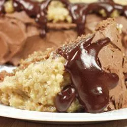

German Chocolate Cake

Description
German Chocolate Cake with brown sugar and coconut topping.
Ingredients
- 1 ½ cups cake flour
- 1 cup white sugar
- ½ teaspoon baking powder
- ½ teaspoon baking soda
- ½ teaspoon salt
- ⅓ cup butter, softened
- ⅜ cup buttermilk
- 1 teaspoon vanilla extract
- 4 (1 ounce) squares German sweet chocolate
- 2 eggs
- ⅜ cup buttermilk
- ⅔ cup flaked coconut
- ½ cup packed brown sugar
- 2 tablespoons cream
- ¼ cup chopped walnuts
- ¼ cup butter, softened
Steps
- Preheat oven to 350 degrees F (175 degrees C). Grease and flour one 9 inch square cake pan.
Sift the cake flour, 1 cup white sugar, baking powder, baking soda, and salt together.
- Cream 1/3 cup of the butter or margarine. Stir in 3/8 cup buttermilk and 1 teaspoon vanilla.
Blend in the flour mixture and beat with an electric mixer on medium speed for 2 minutes.
Add the melted and cooled German sweet chocolate, eggs, and the remaining 3/8 cup buttermilk.
Continue to beat at medium speed for another minute more. Pour batter into the prepared pan.
- Bake at 350 degrees F (175 degrees C) for 40 minutes. Cool in pan for 15 minutes then frost.
- To Make Frosting: Combine the coconut, brown sugar, cream, chopped nuts, 1/4 cup butter or margarine.
Mix until of a spreadable consistency. Spread over top of baked cake. Broil 3 inches from heat until
browned (about 3 minutes). Serve cake warm or cold.
Home